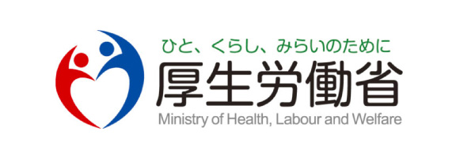

厚生労働省認可団体
怪我や病気で働けない間の「休業補償」も。
俳優・スタッフ・YouTuberなど芸能従事者が加入できる
国の制度「げいのう労災」。
現場や撮影中、移動中の事故。治療費は全額自己負担だと思っていませんか？
入院や自宅療養で仕事がストップ。その間の生活費・休業補償はどうしますか？
「労災に入っていないと契約できない」「現場に入れない」と元請けに言われたことは？
本来は「雇われている人」のための保険ですが、
芸能従事者（俳優・スタッフ・YouTuber等）も「特別加入制度」を利用することで、
国の手厚い補償を受けることができます。
民間の保険とは違い、国が運営する公的な保険制度です。営利目的ではないため、掛金に対する補償の手厚さが特長です。
「怪我で働けない＝収入ゼロ」ではありません。
労災保険なら、療養のため休業した期間（休業4日目から）、給付基礎日額の80%が支給されます。
例えば…
日額1万円の設定なら、1日休むごとに
8,000円 が支給されます。
仕事中の怪我や病気が対象です。現場、スタジオ、ロケ先での作業中はもちろん、打ち合わせ中の移動や、業務に起因する病気も含まれます。
自宅と仕事場の往復中の事故も対象です。現場への直行直帰や、シェアオフィスへの移動中に起きた事故も補償されます。
同じ「もしも」への備えでも、補償の中身は大きく違います。
| 比較項目 | 労災保険（特別加入） | 一般的な民間の傷害保険 |
|---|---|---|
| 治療費 | 実質0円（全額補償） | 上限・自己負担ありが多い |
| 休業補償 | 日額の80%を補償 | 日額固定・日数制限あり |
| 通勤中の事故 | 対象 | 商品による |
| 障害・遺族補償 | 年金・一時金あり | 一時金のみが多い |
| 運営 | 国（非営利） | 民間企業（営利） |
| 元請けへの証明 | 加入証明書を発行 | 労災の代わりにはならない |
※ 民間保険の内容は商品により異なります。労災保険は民間保険との併用も可能です。
労災保険の特別加入で対象となる「芸能従事者（芸能関係作業従事者）」は、大きく次の2つに分かれます。 出演する人だけでなく、作品づくりを支えるスタッフも対象です。
舞台・映像・音楽などで「演じる・表現する」人。
作品の制作現場を支える裏方の人。
動画の企画・出演・撮影・編集を行うYouTuberや配信者、動画クリエイターも芸能従事者として特別加入の対象になります。「自分は入れる？」と迷ったら、まずはご相談ください。
補償のベースとなる「給付基礎日額」を選びます。日額が高いほど、休業時の補償も手厚くなります。
| 給付基礎日額 | 休業補償の目安 （1日あたり・日額の80%） |
|---|---|
| 3,500円 | 2,800円 |
| 5,000円 | 4,000円 |
| 10,000円 | 8,000円 |
| 20,000円 | 16,000円 |
※ 給付基礎日額は3,500円〜25,000円の範囲で選択できます。実際の保険料は選んだ日額と職種ごとの保険料率によって決まります。正確な保険料はLINEで無料シミュレーションいたします。
すべてオンラインで完結。書類がそろえば最短翌日から補償開始。
友だち追加して、職種・希望の補償を伝えるだけ。
対象可否と保険料をご案内。納得してから進めます。
必要書類はオンラインで提出。手間は最小限です。
最短翌日から適用。加入証明書も発行できます。
「撮影現場で労災の加入証明を求められて焦りましたが、LINEで相談したら翌日には手続きが終わりました。」
「撮影中のケガで通院。治療費の負担がなく、休んでいた間の補償もあって本当に助かりました。」
「芸能の仕事は労災に入れないと思い込んでいました。想像より安く、加入して安心できました。」
※ 個人の感想であり、補償内容・給付を保証するものではありません。
私自身、かつては芸能の世界で活動していました。ある日、現場へ向かう途中で事故に遭い、数ヶ月間働けなくなった経験があります。その時、何の補償もなく貯金を切り崩す生活の恐怖を味わいました。
「好きな道を選んだから、自己責任」——そんな世間の風潮を変えたい。芸能に関わる人が安心して働ける環境を作りたい。その一心で、この労災保険事務組合を立ち上げました。
あなたの挑戦を、足元から支えさせてください。
給付基礎日額（補償額の設定）と職種ごとの保険料率によって決まります。日額が低い設定なら月額数千円程度から加入可能です。ご希望の補償内容に合わせてシミュレーションいたしますので、LINEにてお気軽にお問い合わせください。
すべてオンラインで完結します。必要な書類も最低限ですので、書類がそろえば最短で翌日から適用開始することも可能です。お急ぎの方もご相談ください。
芸能従事者は「芸能実演家」（俳優・声優・タレント・歌手・演奏家・ダンサー・司会者・スタントマン等）と「芸能製作スタッフ」（監督・演出・撮影・照明・音響・美術・録音・編集等）に分かれます。YouTuber・動画クリエイター・配信者も対象です。ご自身が対象かどうかは、LINEですぐにお答えします。
業務・通勤が原因のケガや病気で療養のため働けない場合、休業4日目から給付基礎日額の80%（休業補償給付60%＋特別支給金20%）が支給されます。日額1万円の設定なら1日あたり8,000円が目安です。
はい、自宅と仕事場の往復（通勤災害）も対象です。現場への直行直帰や、業務のための移動中に起きた事故も補償の対象になります。
はい、民間の保険と労災保険は併用可能です。両方から給付を受け取ることができるため、より手厚い備えになります。特に休業補償の面で労災保険は非常にコストパフォーマンスが高いのが特徴です。
はい、発行可能です。元請け企業から「労災の加入証明が必要」と求められた場合も、加入証明書をご用意できますのでご安心ください。
| 販売業者名 | 一般社団法人JAPAN ACTION GUILD |
|---|---|
| 代表責任者名 | 代表理事 矢部 大 |
| 所在地 | 〒150-0043 東京都渋谷区道玄坂1丁目10番8号 渋谷道玄坂東急ビル2F−C |
| メールアドレス | contact@rousai.or.jp |
| ホームページURL | https://rousai.or.jp/ |
| お問い合わせ | 公式LINEにて24時間受付中 |
「自分の職種は対象？」「保険料はいくら？」
些細な疑問でも構いません。
専任のスタッフが丁寧にお答えします。